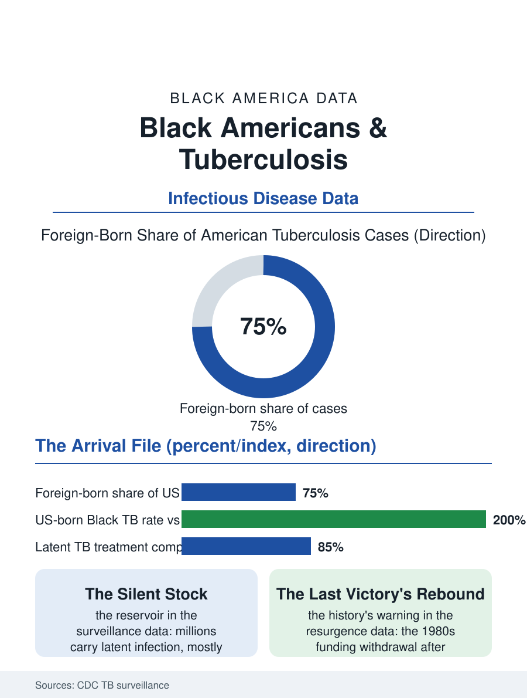

Black Public Health
The Arrival Story: Black Americans and Tuberculosis
Tuberculosis is now mostly an arrival story: three quarters of cases are foreign-born, and the latent reservoir and congregate settings hold the last mile. The tuberculosis file.

Tuberculosis in Black America is a disease of history and of arrival: the rates among U.S.-born Black Americans have fallen to near the national low, while the foreign-born Black population, arriving from high-prevalence countries, carries the majority of the current cases, and the congregate settings, shelters and correctional facilities, concentrate what remains. The federal surveillance data count the pattern annually. This article reads the tuberculosis file.
The Long Decline and Its Residue
Tuberculosis was the leading killer of the Black urban population of the early twentieth century in the mortality tables, the crowded tenement disease whose rates the public health establishment's sanatorium and housing reforms attacked over the century's first half, and the antibiotic era's arrival after the war collapsed the rates across races by an order of magnitude. The U.S.-born Black rate today stands low in absolute terms, roughly double the white rate, the ratio's persistence reflecting the socioeconomic geography the disease has always followed, crowding, nutrition, and the HIV co-infection that reactivates latent disease, more than any biological difference. The foreign-born share dominates the current case counts: the surveillance data attribute about three quarters of all American tuberculosis cases to the foreign-born, and the Black cases are substantially African-born and Caribbean-born arrivals whose latent infections, acquired in childhood in high-burden countries, reactivate in the years after arrival, at rates the refugee and immigrant screening programs are designed to catch and, in the latent form, treat. The latent reservoir is the file's central quantity: millions of Americans carry latent infection, the vast majority never activating, with the foreign-born Black population's latent prevalence running high, a silent stock the prevention program manages through targeted testing of the highest-risk groups.
Congregate Settings and the Control System
The control system's success and its residue share the same geography: the shelters and correctional facilities where ventilation is poor and turnover is high produce the outbreaks the surveillance systems detect, and the Black population's overrepresentation in the congregate settings converts the settings' outbreaks into the case data's racial pattern. The outbreak literature's Black cases concentrate in precisely these institutions and in the immigrant households' first years, and the control measures, directly observed therapy, the daily watching of the pill swallowed that gave the program its famous name, contact investigation, and the latent treatment course, work in the data with a reliability that makes tuberculosis one of the few infectious diseases whose elimination was credibly declared achievable. The HIV co-infection file intersects here decisively: the co-infected patient's risk of activation is an order of magnitude above the latent carrier's, and the antiretroviral era's success in the HIV file is simultaneously a tuberculosis success, the activation rates falling with the immune recovery the treatment produces. The diagnostic technology file has modernized the hunt, the molecular tests that identify the bacillus and its drug resistance in hours replacing the weeks-long cultures, and the multidrug-resistant cases, rare in the American data and concentrated among the foreign-born arrivals, are managed by the specialist system at costs the public program absorbs.
Elimination's Last Mile
The tuberculosis file closes as the hepatitis file did, on an achievable goal's last mile: the national case rate has fallen to levels where elimination, defined as fewer than one case per million, is a plausible horizon in the epidemiologists' models, and the remaining distance is composed almost entirely of the populations this file names, the foreign-born latent reservoir and the congregate residue. The program's design answer is the targeted one, screening and latent treatment offered at arrival, in the clinics serving the immigrant communities, in the shelters' health services, with the community health worker model that the outreach files validate. The history supplies the warning: the disease's decline was interrupted in the 1980s and 1990s by exactly the funding and attention withdrawal that followed the declaration of premature victory, the resurgence concentrated, as ever, in the Black urban population and the HIV co-infected, before the control system's restoration reversed it. The surveillance counts the cases each year in the low thousands nationally, hundreds of them Black. The file's judgment is that the numbers describe a winnable endgame whose winners will be decided by whether the last mile's funding follows the map, into the arrival clinics and the congregate settings, where the bacillus's remaining American address is, in the data's plainest reading, still disproportionately Black.
More in Black Public Health
Hypertension Among Black Adults: Prevalence, Control, and Consequences
About 55 percent of Black adults have hypertension — the highest rate of any U.S. group. Prevalence, onset, control, and the stroke, heart, and kidney consequences in the data.
Diabetes Among Black Adults: Prevalence and Complications
Nearly one in five Black adults has diabetes, diagnosed or undiagnosed — and its complications fall with particular weight. The CDC data on prevalence, control, and outcomes.
Black Life Expectancy: The Gap at Birth and Its Causes
Black life expectancy at birth is about 73 years, roughly five years below the national figure — the summary measure of every health gap in this section. The CDC data.
Source: Centers for Disease Control and Prevention, Tuberculosis Surveillance reports; latent tuberculosis infection literature.